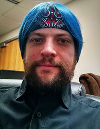

Dr. Clemente Izurieta (Director)
 Dr. Izurieta is an Assistant Professor in the Computer Science department at Montana State University. Born in Santiago, Chile. His research interests include empirical software engineering, design and architecture of software systems, design patterns, the measurement of software quality and ecological modelling. Dr. Izurieta has approximately 16 years experience working for various R&D labs at Hewlett Packard and Intel Corporation. When not teaching, Clem and his wife(Sharlyn) can be found in the local trails, running, hiking or snow shoeing!
Dr. Izurieta is an Assistant Professor in the Computer Science department at Montana State University. Born in Santiago, Chile. His research interests include empirical software engineering, design and architecture of software systems, design patterns, the measurement of software quality and ecological modelling. Dr. Izurieta has approximately 16 years experience working for various R&D labs at Hewlett Packard and Intel Corporation. When not teaching, Clem and his wife(Sharlyn) can be found in the local trails, running, hiking or snow shoeing!
Isaac Griffith
Isaac Griffith is currently a doctoral student in the Computer Science Department at Montana State University in Bozeman, MT. Currently Isaac holds a B.A. in Philosophy, a B.S. in Computer Science, and an M.S. in Computer Science from Montana State University. Isaac's current focus is on software engineering and more specifically Technical Debt which is being investigated through continued work on Design Pattern Grime. His other research interests include automated software engineering, model driven architecture, interface driven design, parallel and concurrent software design, data mining, and machine learning.
Derek Reimanis
 I am a PhD student in Computer Science at MSU-Bozeman. I am from Golden, Colorado, a mountain town centered around a small college. I held an internship in Golden this past summer with CoorsTek, the world's largest ceramics manufacturing company. While there, I programmed with software to make it easier for others to record dimensional analysis tests of ceramic parts. My interests in computing lie primarily in networking and system administration. I enjoy learning of the challenges that new networking algorithms must face. Also, and in part due to my internship, I am proficient at software testing; making sure that a user will not be confused or have difficulties with a process.
I am a PhD student in Computer Science at MSU-Bozeman. I am from Golden, Colorado, a mountain town centered around a small college. I held an internship in Golden this past summer with CoorsTek, the world's largest ceramics manufacturing company. While there, I programmed with software to make it easier for others to record dimensional analysis tests of ceramic parts. My interests in computing lie primarily in networking and system administration. I enjoy learning of the challenges that new networking algorithms must face. Also, and in part due to my internship, I am proficient at software testing; making sure that a user will not be confused or have difficulties with a process.
David Rice
Nathan Woods
Killian Smith
Kathryn Manning